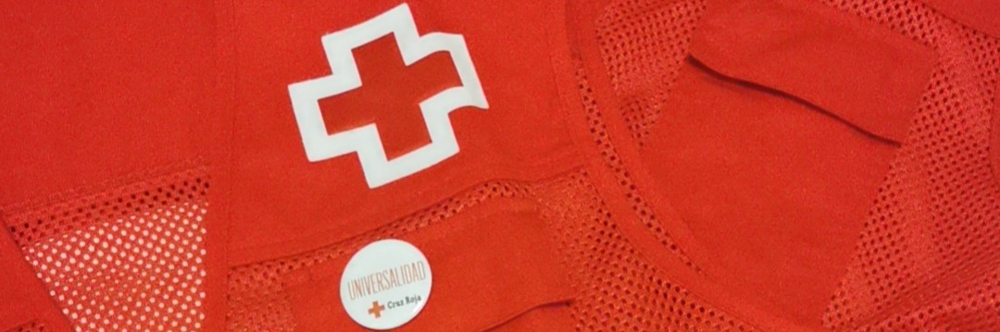

Mi compromiso con el voluntariado: experiencias que transforman vidas
El voluntariado ha sido una parte integral de mi desarrollo personal y profesional. A través de estas experiencias, he tenido la oportunidad de contribuir a mi comunidad y aprender lecciones valiosas sobre trabajo en equipo, organización y empatía.
Cruz Roja Española: Salud y medio ambiente
En mi papel como voluntario en la Cruz Roja Española, he trabajado en proyectos enfocados en la adherencia terapéutica y la promoción de hábitos de vida saludables. Supervisé a pacientes para asegurar que siguieran sus tratamientos y participé en campañas de educación sobre alimentación equilibrada y reciclaje. Además, colaboré en la conservación de espacios públicos, contribuyendo al cuidado del medio ambiente.
22ª Conferencia de Parasitología
Como voluntario en este evento, desempeñé un rol clave en la organización, especialmente en el área de servicios IT y coordinación de otros voluntarios. Esta experiencia me permitió aplicar mis conocimientos técnicos y fortalecer mis habilidades de liderazgo en un contexto académico.
Lucha contra el COVID-19
Durante la pandemia, trabajé como voluntario en el Hospital Yanqi de Beijing, ayudando en la logística de la vacunación. Mis responsabilidades incluyeron orientar a las personas, proporcionar información sobre el proceso y garantizar que entendieran el consentimiento informado. Esta experiencia fue especialmente significativa, ya que me permitió contribuir en un momento de gran necesidad.
"Ayudar al que lo necesita no sólo es parte del deber, sino de la felicidad."
— José Martí